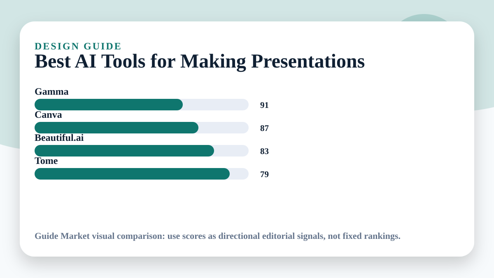

Best AI Tools for Making Presentations
Updated May 11, 2026. Prices and plans change often; always confirm on the official website before paying.
A good presentation is not a pile of slides. It is an argument with visual pacing. AI presentation tools are helpful when they structure the story, but dangerous when they produce generic slides that look polished and say very little.

Editorial verdict
My pick: Gamma for fast narrative drafts, Canva for design control, Beautiful.ai for structured business decks, and Tome for storytelling experiments. I would always rewrite the slide headlines manually.
Quick picks
- Best fast draft: Gamma
- Best design control: Canva
- Best business structure: Beautiful.ai
- Best narrative exploration: Tome
Price and feature snapshot
| Tool | Price snapshot | Pros | Cons |
|---|---|---|---|
| Gamma Official site | Free and paid plans listed on official pricing page | Fast decks from prompts and documents | Can sound generic without editing |
| Canva Official site | Free plan; Pro pricing on official page | Templates, brand assets, collaboration | AI outline quality varies by prompt |
| Beautiful.ai Official site | Paid presentation plans listed officially | Consistent layouts and business-friendly templates | Less flexible for unusual visual styles |
| Tome Official site | Official site lists current product access and plans | Narrative deck exploration | May require more editing for formal decks |
The slide test
Read only the slide titles. If the story does not make sense, the deck is weak no matter how beautiful it looks. AI can produce decent first drafts, but your job is to sharpen the claim on every slide.
Pitch decks vs school decks
For a startup pitch, use Beautiful.ai or Canva when consistency matters. For a class presentation, Gamma is faster because it can turn rough notes into an outline quickly. For sales or internal business decks, do not skip brand and data checks.
Editorial recommendation
I would start in Gamma when I need the story fast, then move to Canva if the final deck needs polish. Beautiful.ai is excellent for clean business layouts, but I would not use it for highly custom visual storytelling.
Best use cases
- Five-minute class presentation
- Investor pitch deck outline
- Sales presentation with branded visuals
- Internal strategy deck from messy notes